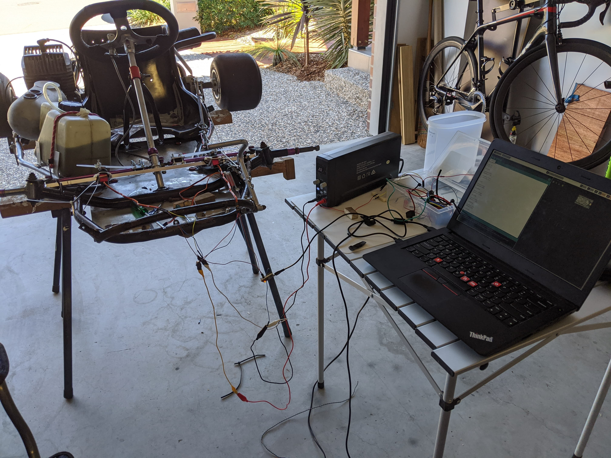
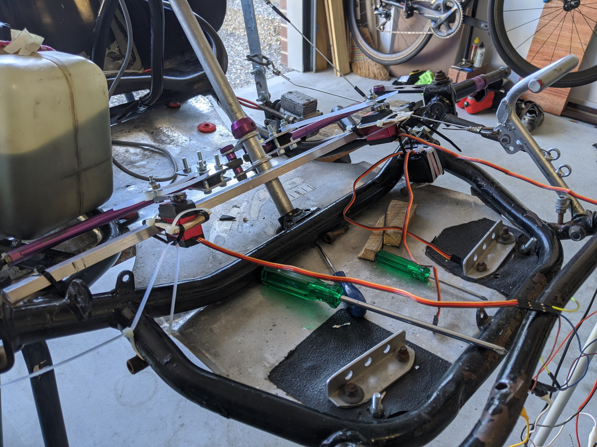

Steering System - Attempt 1
This weekend we attempted to build a servo steering system.

The design consisted of two high torque servos (the same models used for the breaking) attached via zip-ties to clamps on the shaft connected to the wheels. The servos were driven by a Teensy. To steer in a certain direction, the servo on the opposite side would pull on the wheel shaft, causing the wheels to rotate.
An image of the set up:

This system worked when the kart was up on the rack, however once the wheels were put on and the kart was put on the ground, the weight of the kart was too much for the servos and the kart could no longer turn.
Unfortunately, due to the high amount of force required to turn when the kart is on the ground, this design is not viable. We are currently designing a new system using bike sprockets attached directly to the steering shaft. This design should have a much greater mechanical advantage and will allow us to use cheaper and more powerful DC motors, instead of servos.